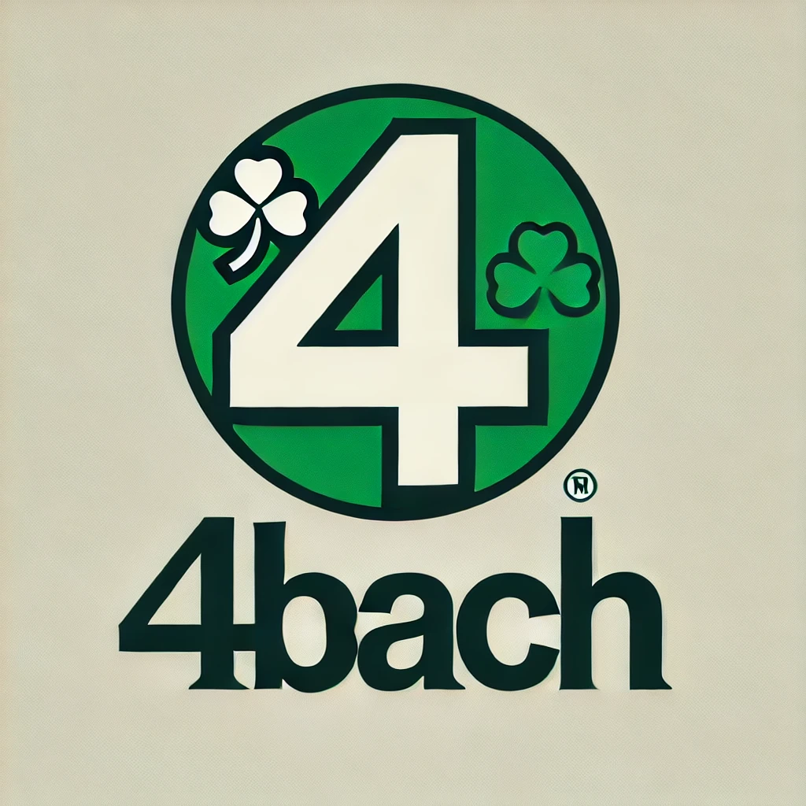

Bienvenue sur 4bach
Le forum des passionnés de Forbach et de ses légendes.
Rencontre chaudes
/rch/
Disco
/dis/
Mine
/min/
Forbach
/fch/
Grève
/grv/
Rétro
/rto/
Tourisme
/trs/
Histoire locale
/hlo/
FaceNook
/facenook.html/
WikiBach
/wikibach.html/
Musique
/msq/
Artisanat
/art/
Cuisine
/cui/
Nature
/nat/
Mode
/mod/
Jeux
/jeu/
Cinéma
/cin/
Sciences
/sci/
Voyage
/voy/